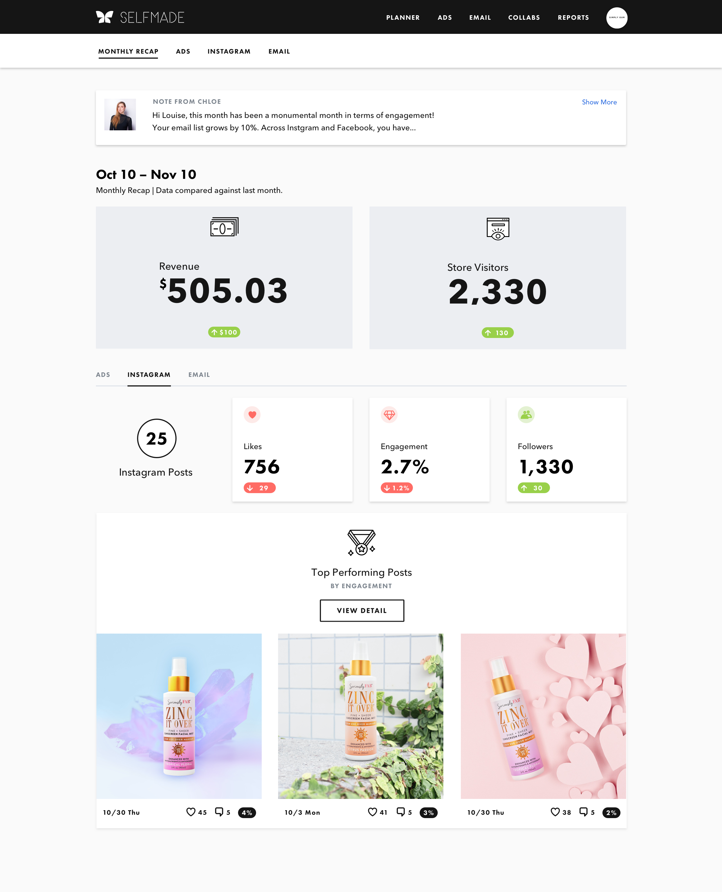
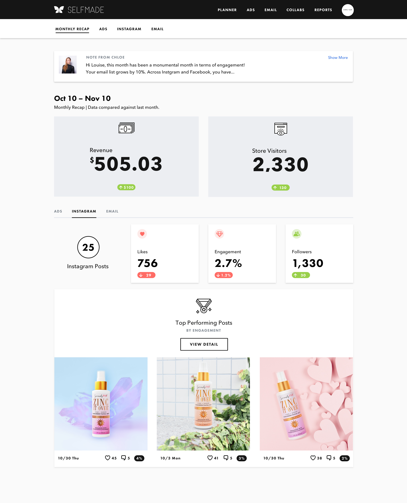

PROBLEM
The first version of partner reporting we built was hosted on Looker. It was the easiest way to aggregate performance data from Instagram, Facebook, Klaviyo (the email marketing tool we use), and Google Analytics in one platform. We embedded this in our internal tool Piazza, mostly for Marketing Manager use, and sent month PDF reports to our partners.

The data was not friendly. There were few explainers, too many detailed metrics yet no emphasis on which metrics were vital. Most importantly, we didn’t show our partners which ads, emails, and posts were doing best so they could draw trends from the data. Our partners, who were not so enthusiastic about reading stats to begin with, could not be less interested in these dry PDF reports. We need to find a way to delight partners with results.


 
